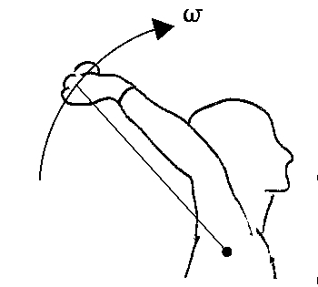
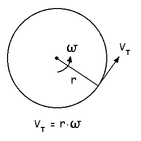
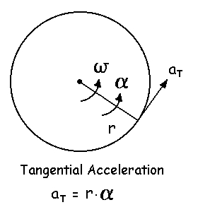
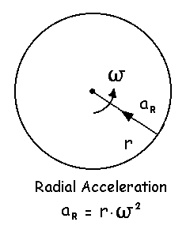
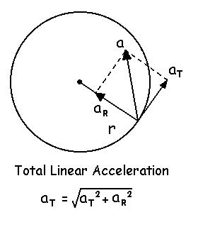

Angular Kinematics
It
is important to be able to convert degrees to radians and vice versa. Consider
an angular displacement (θ) in which the arc length of the circular
path (s) is equal to the radius of the circular path (r). Since one revolution
is 360° and the circumference of a circle is 2πr,
1 rad = 360° / 2π = 57.3°
So a radian is a unitless ratio of the arc length (l) to the radius (r) and it is equivalent to 57.3°. We will see that this unitless expression of angular displacement is very important to the kinematics and kinetics of human motion. We can convert from degrees to radians by dividing by 57.3 and we can convert from radian to degrees by multiplying by 57.3.
We often need to know the linear parameters of various points on a body that is rotating. For example, the linear motion of the hand depends upon the angular motion of the upper limb. Although a particle on a rotating body is following a circular path, at any particular instant, its velocity is tangent to the path and it has a linear velocity called tangential velocity (Vt).

The rate of change of tangential velocity is tangential acceleration.
Since tangential velocity is a vector that has a continuously changing direction, there must be an acceleration associated with it. This acceleration is at 90 degrees to the tangential acceleration projected along the radius toward the axis of rotation and is called the radial acceleration.

The total linear acceleration is the vector sum of the tangential and radial acceleration.
